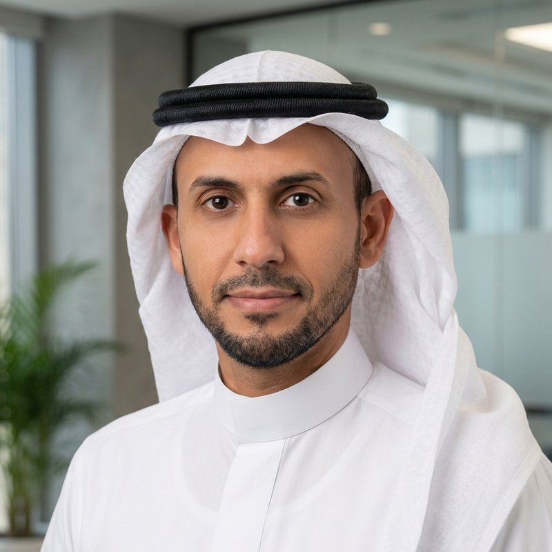

Turning national AI ambition into capability that lasts.
AI Capability, Technology Governance & Institutional Transformation Executive General Manager, SDAIA Academy · Full Professor of Software Engineering
I build and govern national AI and technology capability institutions. As General Manager of the SDAIA Academy I lead Saudi Arabia's national data and AI capability development: 70 staff across five units, and 6,000+ specialists trained in 2026, which took the Academy's cumulative total to 18,000 against a 2030 target of 20,000. Behind that sit nearly twelve years of executive leadership — technology governance at Tahakom, three deanships and the CIO role at Prince Sultan University — and a research record of 146 peer-reviewed publications.

Institutions, governance, capability.
Three areas of practice, built across a national AI authority, a national technology company and a research university.
Institutional leadership
Institution building, operating-model design, organisational integration, strategic planning, KPI and performance systems, and change management (Prosci).
See the experience record 02Technology & AI governance
Technology governance, AI governance, enterprise architecture, portfolio and asset governance, GRC, PMO, CMMI and ISO quality systems.
Read the cases 03National capability
National AI and data capability, workforce development, professional certification, accreditation, strategic partnerships, and alignment with Vision 2030 and the Human Capability Development Program.
See what was builtThings that existed afterwards that did not exist before.
- National delivery scaledSDAIA Academy · 2026
Trained 6,000+ data and AI specialists in a four-month cycle, which took the Academy’s cumulative total to 18,000, 90% of the 2030 target of 20,000.
- A national institute integratedSDAIA Academy · Aug 2026
Integrated the Information Technology Institute into the SDAIA Academy, bringing 68+ programmes, 6,000+ enrolled trainees and about 50 staff under one operating model.
- Technology governance maturedTahakom · 2024–2026
Raised enterprise-architecture maturity from Level 2 to Level 4 on external assessment and led the AI and Advanced Technologies sector to CMMI Level 3.
- Enterprise AI strategy approvedTahakom · 2024–2026
Supervised the consulting engagement that produced the company’s AI strategy, use-case portfolio and AI governance policy, approved by the CEO.
- A college foundedPrince Sultan University · 2024
Founded the College of Space & Aviation Sciences with four bachelor’s and three master’s programmes, under agreements with the Saudi Space Agency and NASA; the college has since opened.
- First-time international accreditationPrince Sultan University · 2020–2024
Secured first-time ABET and HCÉRES accreditations and renewed AACSB as Dean of Quality Assurance; chaired the university’s fourth strategic plan.
- Enterprise systems deliveredPrince Sultan University · 2015–2019
Delivered an institution-wide ERP for 500 users in four months as university CIO, under a three-year digital transformation strategy.
- A regional AI capability mandateArab Standing Committee on AI · 2026
Chair of the Capacity Building & Partnerships technical team and vice-chair of the AI Governance team, shaping a 2026–2029 Arab workplan on skills frameworks, capacity mapping and partnerships.
A research record behind the executive one.
Full Professor of Software Engineering, with 116 journal articles, 27 conference papers and three book chapters, cited more than 8,600 times. A few that represent the work:
- 2026
- 2026
- 2025
- 2020
AI-native and agentic software engineering.
A series of 11 single-author working papers published through 2026 asking one question from several directions: if agents write most of the code, what is left of the engineering discipline — and what must change in architecture, lifecycle, governance and education?
Writing, most recently.
Short essays on AI strategy, software engineering practice and technology leadership — 83 pieces so far, in English and Arabic.
Let's build something with national impact.
I'm open to conversations about institution building, technology and AI governance, and national capability — as well as speaking engagements, advisory and board roles, and research collaboration.